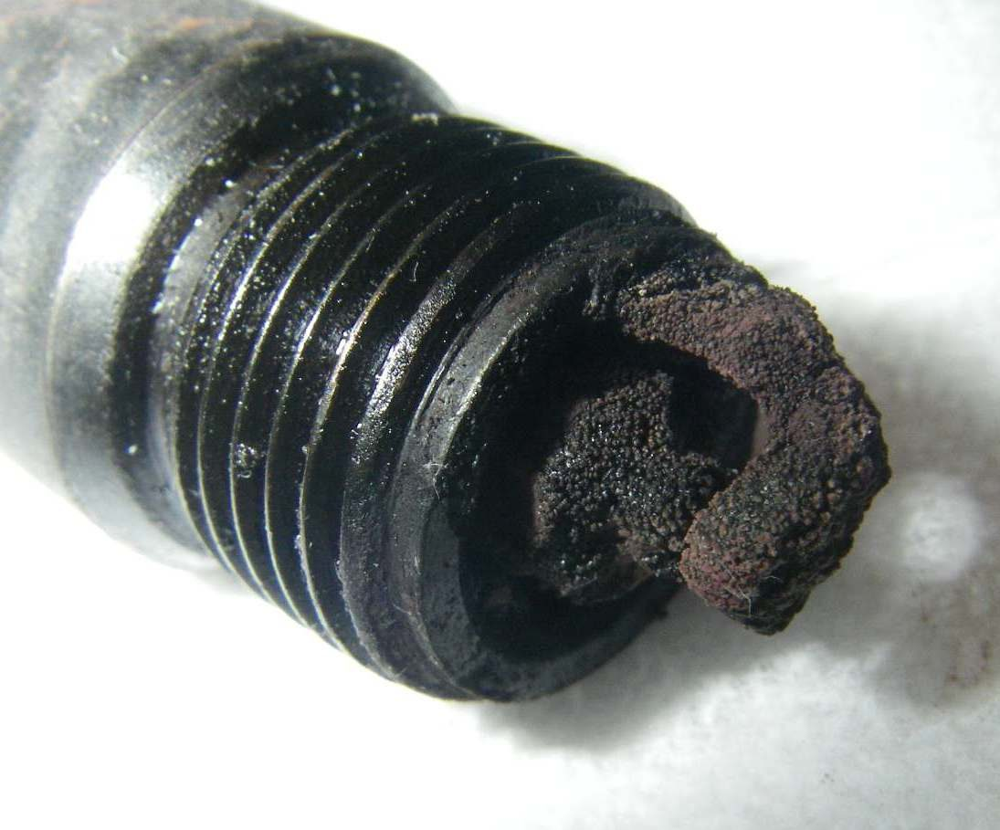

When you open the throttle, especially at low revs in a high gear or uphill, you hear a light, metallic rattle like small stones in a tin, from the top of the engine. This is pinking (detonation): part of the fuel charge explodes on its own instead of burning smoothly from the spark. It hammers the piston and can crack rings or hole the piston. Heat, high compression (often from carbon build-up), a lean mixture, low-grade fuel and too much ignition advance all make it worse.
Is it safe to ride?
With care. Change down a gear and open the throttle gently so the pinking stops. If it pinks even under light load, stop riding hard and fix it soon.
Quick checks first
- Does it stop if you change down a gear and use less throttle?
- What fuel grade is in the tank? (K-Light 125: unleaded 92 or 95.)
- Is the engine running hot?
- Is the spark plug the correct type?
- Is the sound really pinking? A rattle at idle or with no load is more likely the cam chain, a loose heat shield or the exhaust.
Diagnose it step by step
1Does the rattle happen only under load (accelerating, climbing) and disappear when you ease the throttle?
- Yes: pinking. Go to step 2.
- No, it rattles at idle or when coasting: not pinking. See Rattling from the cam chain, Rattling from the exhaust or heat shield or Knocking from the cylinder when cold.
2Were you labouring the engine at low revs in a high gear?
- Yes: change down earlier. Small singles pink easily when lugged.
- No, it pinks at normal revs: go to step 3.
3Is the fuel old, from an unknown source, or a lower grade than the manual asks?
- Yes: fill with fresh fuel of the correct grade from a busy station and retest.
- No: go to step 4.
4Read the spark plug. Is it white or blistered, or the wrong heat range?
- White: lean. Find an intake air leak and see Engine runs hot and lean. Carburettor: clean it.
- Wrong type: a "hotter" plug than specified can glow and fire the charge early. Fit the correct plug: Spark plug service.
- Normal: go to step 5.
5Is the engine running hot (blocked fins, low oil, low coolant)?
- Yes: Check air cooling and see Air-cooled engine overheats.
- No: go to step 6.
6Is the compression higher than the manual figure, or has the engine done many kilometres without a top-end service?
- Heavy carbon on the piston and head raises compression. The K-Light 125 manual lists heavy carbon as the cause of high compression. Do a compression test. Workshop: Assess the top end. Two-strokes: Decarbonise.
- No: go to step 7.
7. Still pinking? The ignition may be too far advanced. Most modern ignition timing is fixed in the CDI or ECU, so a change usually means a wrong or faulty unit, or a loose pick-up or flywheel. See Ignition timing suspected wrong and Check the ignition timing.
Causes, most likely first
| Cause | How to confirm | Fix |
|---|---|---|
| Labouring in too high a gear | Stops when you change down | Change down earlier |
| Low-grade or old fuel | Fuel history | Fresh fuel of correct grade |
| Lean mixture or air leak | White plug, popping | Intake leak test |
| Overheating | Fins, oil, coolant | Air cooling check |
| Wrong plug heat range | Plug code | Spark plug |
| Carbon build-up | High compression reading | Top-end assessment |
| Timing too advanced | Workshop timing check | Timing check |